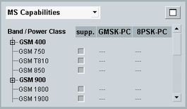
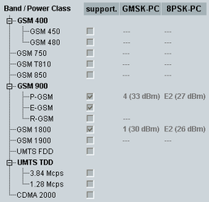
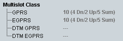
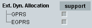
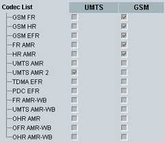
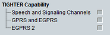

To display this area, select "MS Capabilities" in the field below the event log area.

Information shown in the MS capabilities area is retrieved during attach in the PS domain and if classmark3 request is switched on also during location update in CS domain.
Press the button to the right to maximize the area. The individual sections are described below.

Supported GSM bands/subbands and support indicators for UMTS and CDMA2000 networks.
The columns GMSK-PC and 8PSK-PC indicate the power class for GMSK and 8PSK modulation and the nominal maximum output power in dBm corresponding to the power class.
Remote command:
Multislot class of the mobile station in (E)GPRS and dual transfer mode (DTM) as defined in 3GPP TS 45.002, annex B.
The multislot class determines, for example, the maximum number of DL (Rx) and UL (Tx) timeslots supported by the MS per TDMA frame. Some classes define also a maximum for the sum of DL+UL timeslots.
The multislot class is displayed in the following format:
<multislot class> (<Rx> Dn/<Tx> Up/<sum> Sum)
Example: 10 (4 Dn/2 Up/5 Sum) indicates that the MS supports multislot class 10 with 0 to 4 DL slots, 0 to 2 UL slots, and 1 to 5 UL+DL slots in one TDMA frame.
Remote command:
Support indicators for extended dynamic allocation (see 3GPP TS 44.060), for GPRS and EGPRS mode.
Remote command:
Indicates which codec the MS supports in UMTS and GSM networks.
- Full rate, half rate and enhanced full rate for GSM
- Five adaptive multi-rate codec types (FR AMR, HR AMR, UMTS AMR, UMTS AMR2, OHR AMR)
- TDMA enhanced full rate
- PDC enhanced full rate
- Four adaptive multi-rate wideband codec types (FR AMR-WB, UMTS AMR-WB, OFR AMR-WB, OHR AMR-WB)
The speech codec list for GSM and UMTS is defined in 3GPP TS 26.103 section 6.3.
Remote command:Indicates the VAMOS support of the MS and the VAMOS level supported.
Remote command:
Indicates tightened link level performance support in the MS (see 3GPP TS 24.008). The tightened performance applies to the traffic channels and signaling channels specified in 3GPP TS 45.005.
Remote command: